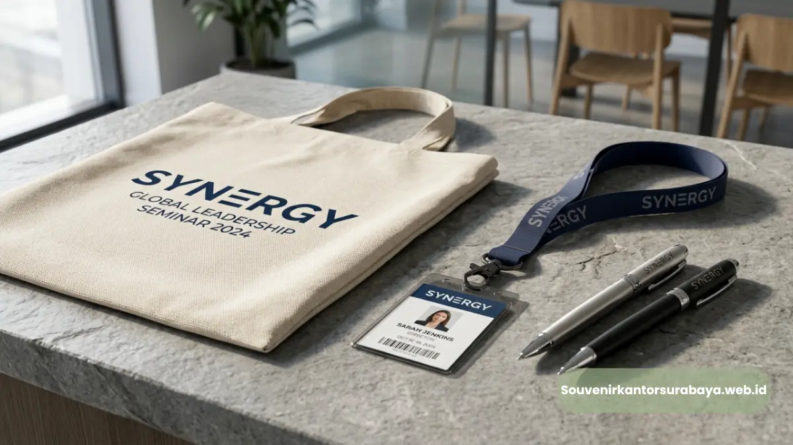
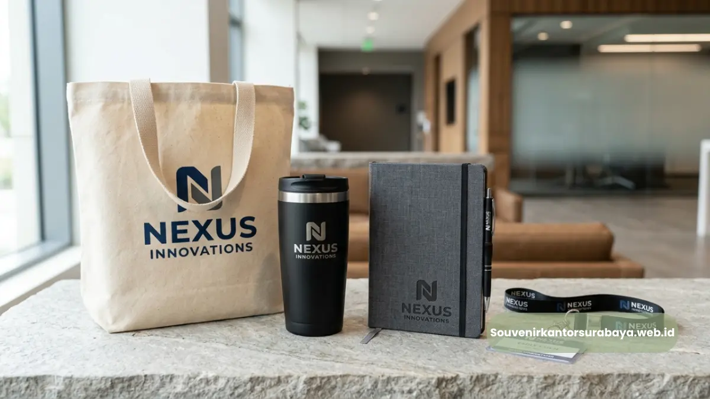
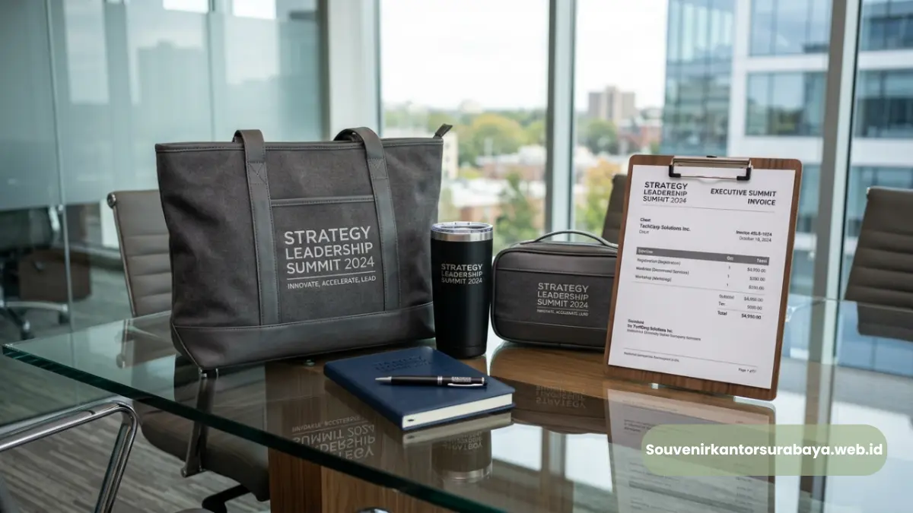

Isi Seminar Kit Surabaya Favorit untuk Acara Korporat
Isi seminar kit Surabaya yang paling diminati peserta acara korporat umumnya terdiri dari notebook custom logo, pulpen, tumbler, tote bag, dan lanyard, yang dipilih berdasarkan fungsi praktis serta daya tahan penggunaannya.
- Notebook dan pulpen menjadi item wajib di hampir setiap seminar kit.
- Tumbler dan tote bag menambah nilai fungsional sekaligus estetika branding.
- Lanyard dan id card holder relevan untuk acara dengan sistem registrasi.
- Kombinasi item sebaiknya disesuaikan dengan durasi dan jenis acara.
- souvenirkantorsurabaya.web.id menyediakan berbagai pilihan item sesuai kebutuhan acara Anda.
Menentukan isi seminar kit yang tepat sering menjadi tantangan tersendiri bagi tim penyelenggara acara korporat. Terlalu sedikit item membuat kit terasa kurang berkesan, sementara terlalu banyak item justru berisiko membengkakkan anggaran tanpa manfaat tambahan yang signifikan. Memahami item mana yang benar-benar dibutuhkan peserta menjadi kunci menyusun seminar kit yang efektif.
Apa Saja Item Wajib dalam Seminar Kit?
Item wajib dalam seminar kit umumnya mencakup notebook untuk mencatat materi dan pulpen sebagai alat tulis pendamping, karena keduanya mendukung fungsi utama peserta selama sesi berlangsung. Notebook menjadi item inti karena fungsinya yang langsung relevan dengan aktivitas peserta selama seminar. Peserta dapat mencatat poin-poin penting dari presentasi tanpa perlu membawa alat tulis sendiri.
Pulpen yang menyertainya biasanya turut dicetak logo perusahaan, menjadikannya item kecil namun sering digunakan berulang kali setelah acara usai, baik di kantor maupun di rumah. Kombinasi notebook dan pulpen ini menjadi standar minimal yang hampir selalu ada dalam setiap seminar kit, terlepas dari skala maupun durasi acara yang diselenggarakan.

Item Apa yang Menambah Nilai Fungsional Seminar Kit?
Item yang menambah nilai fungsional seminar kit meliputi tumbler atau botol minum serta tote bag, karena keduanya mendukung kenyamanan peserta sekaligus memperluas jangkauan branding di luar ruang acara.
Tumbler memberikan manfaat langsung bagi peserta yang mengikuti acara berdurasi panjang, terutama pada seminar yang berlangsung seharian penuh. Selain fungsi praktis, tumbler juga menjadi salah satu item yang paling sering dibawa peserta ke lingkungan kerja sehari-hari setelah acara, sehingga memperpanjang durasi paparan logo perusahaan kepada orang lain di sekitar peserta.
Tote bag berperan sebagai wadah yang mengumpulkan seluruh item seminar kit menjadi satu paket rapi. Desain tote bag yang dicetak logo secara jelas turut menjadi media branding yang terlihat sejak peserta memasuki venue hingga perjalanan pulang.
Kapan Lanyard dan Id Card Holder Diperlukan dalam Seminar Kit?
Lanyard dan id card holder diperlukan dalam seminar kit terutama untuk acara dengan sistem registrasi resmi, di mana identifikasi peserta menjadi bagian penting dari alur penyelenggaraan.
Untuk seminar berskala besar dengan ratusan peserta, lanyard dan id card holder membantu panitia mengidentifikasi peserta dengan cepat, terutama saat sesi registrasi maupun saat memasuki area tertentu di venue. Selain fungsi praktis tersebut, lanyard yang dicetak logo perusahaan juga menambah kesan formal dan profesional pada keseluruhan penyelenggaraan acara.
Bagi acara dengan skala lebih kecil atau bersifat internal, item ini bisa menjadi opsional, tergantung kebutuhan sistem registrasi yang diterapkan panitia penyelenggara.
Bagaimana Menyesuaikan Isi Seminar Kit dengan Tema Acara?
Menyesuaikan isi seminar kit dengan tema acara dapat dilakukan dengan memilih warna, desain kemasan, dan kombinasi item yang selaras dengan identitas visual serta jenis kegiatan yang diselenggarakan.
Acara dengan tema formal seperti rapat kerja tahunan cenderung cocok dengan item bernuansa elegan, misalnya notebook hard cover berwarna netral dan tumbler stainless minimalis. Sementara acara dengan nuansa lebih santai, seperti workshop internal atau gathering tim, dapat menyertakan item dengan warna lebih variatif namun tetap konsisten dengan identitas brand perusahaan.
Perusahaan yang ingin menghadirkan seminar kit dengan kombinasi item paling sesuai untuk tema acara mereka dapat berkonsultasi langsung bersama souvenirkantorsurabaya.web.id, guna mendapatkan rekomendasi set yang tepat sasaran.
Baca Juga
Menyusun isi seminar kit yang tepat berarti menyeimbangkan fungsi praktis, daya tahan, dan kesesuaian dengan tema acara. Kombinasi item yang dipilih dengan cermat akan memberikan pengalaman lebih berkesan bagi peserta sekaligus memperkuat citra brand perusahaan.
Konsultasikan kebutuhan isi seminar kit acara Anda bersama souvenirkantorsurabaya.web.id untuk mendapatkan kombinasi item paling sesuai.

Hawa Nadira
Tim penulis CorporateGifts ID berfokus pada strategi souvenir kantor, merchandise korporat, dan inovasi brand untuk klien B2B.
Keahlian: Branding perusahaan, produksi souvenir, paket event, desain materi promosi.
Artikel Terkait

Seminar Kit Surabaya Eksklusif Kunci Sukses Acara Korporat
Seminar kit Surabaya adalah paket perlengkapan seminar yang dicustom logo perusahaan untuk memperkuat branding acara korporat.
Baca Selengkapnya
Harga Seminar Kit Surabaya Sesuai Anggaran Perusahaan
Harga seminar kit Surabaya ditentukan oleh jumlah item per set, jenis material, dan kuantitas pemesanan.
Baca Selengkapnya
Souvenir Kantor Surabaya
Panduan komprehensif memilih souvenir kantor berkualitas tinggi untuk meningkatkan brand awareness dan hubungan bisnis.
Baca Selengkapnya